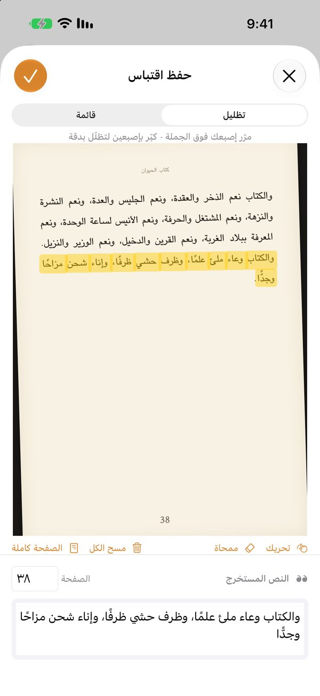
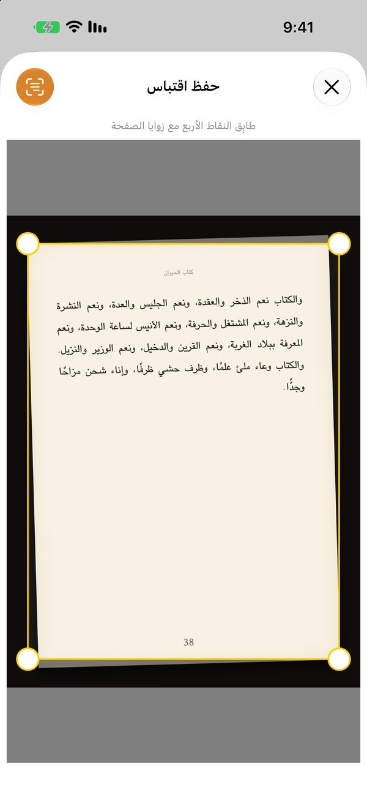
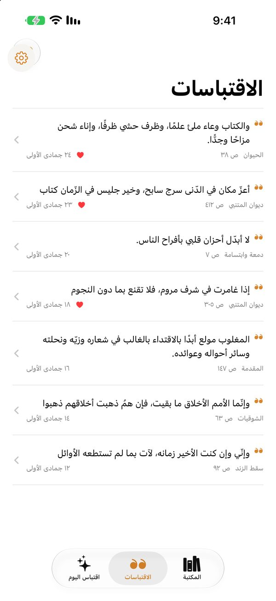
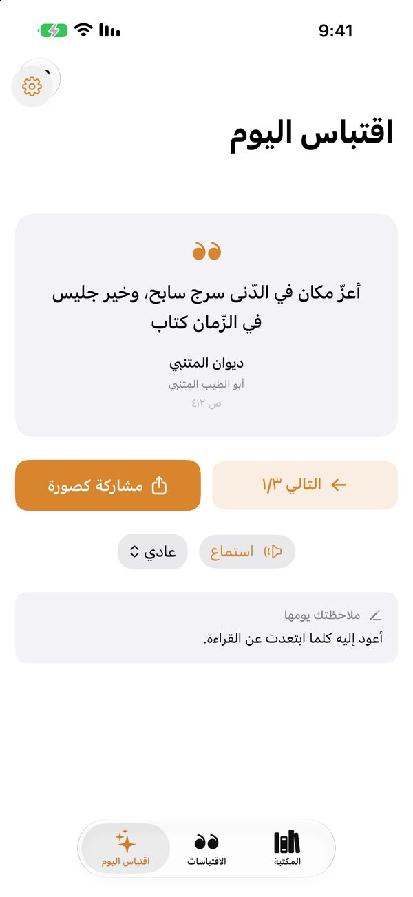

ظلّل سطور كتابك
من دون قلم
صوّر الصفحة ومرّر إصبعك فوق الجملة التي أعجبتك، فتُحفظ تلك الجملة وحدها نصًا ومعها اسم الكتاب ورقم الصفحة.
مجاني حتى 10 كتب و100 اقتباس، بلا إعلانات.

جرّب التظليل
مرّر إصبعك أو مؤشر الفأرة فوق أي جملة في الصفحة أدناه. الكلمات التي تمرّ عليها وحدها تنتقل إلى البطاقة.
أين تنتهي الأسطر الجميلة؟
الكتاب مستعار من المكتبة فلا يمكنك الكتابة عليه. وصورة الصفحة تضيع بين آلاف الصور في ألبومك. وإن نسختها في تطبيق الملاحظات نادرًا ما يرافقها العنوان ورقم الصفحة. يحفظ Bookmark Shot الجملة والكتاب والصفحة بحركتين فقط: صوّر ثم مرّر إصبعك.
صورة مائلة، صفحة مستوية
بعد تصوير الصفحة طابِق زواياها الأربع، فتُسوّى حتى الصورة المائلة كأنها ورقة مستوية. وكلما وضحت الحروف كانت القراءة أدق.
ويمكنك استخدام الصور الموجودة في ألبومك أيضًا.

كل اقتباساتك في مكان واحد
تصطف كتبك في مكتبة من الأغلفة، وتجتمع اقتباساتك في قائمة واحدة. ابحث بالجملة أو الملاحظة أو عنوان الكتاب، وضع قلبًا على ما تريد قراءته مجددًا.
أضف الكتاب بصورة غلافه، فيُقرأ العنوان والمؤلف تلقائيًا، ورقم ISBN أيضًا إن ظهر باركود الغلاف الخلفي.

عُد إلى الأسطر التي نسيتها
يعيد إليك «اقتباس اليوم» أحد اقتباساتك المحفوظة كل يوم مع الملاحظة التي كتبتها. أبقِه على الشاشة الرئيسية أو شاشة القفل بأداة.
أعجبك؟ حوّله إلى بطاقة بطابع ورقي وشاركه.

ثلاث خطوات للبدء
- 1
صوّر الغلاف
يُملأ العنوان والمؤلف تلقائيًا، ويمكنك تعديلهما قبل الحفظ.
- 2
صوّر الصفحة
طابِق الزوايا الأربع فتستوي الصفحة.
- 3
مرّر إصبعك فوق الجملة
يُعثر على رقم الصفحة ويُحفظ معها.
أدوات شاشة التظليل
- تمرير الإصبع
- يختار الكلمات التي تمرّ عليها وحدها
- التكبير بإصبعين
- لتظليل أدق
- تحريك
- اسحب الصفحة المكبّرة
- ممحاة
- تزيل الكلمات التي ظلّلتها
- مسح الكل
- يزيل كل الكلمات المختارة
- الصفحة كاملة
- يحتفظ بكل نص الصفحة
- خانة الصفحة
- رقم الصفحة الذي عُثر عليه، ويمكن تعديله
مع VoiceOver، اضغط مرتين على السطر لإضافته أو إزالته.
مجاني لعشرة كتب و100 اقتباس
مجاني
- حتى 10 كتب و100 اقتباس
- إضافة الكتب من الغلاف، ورقم ISBN من الباركود
- تسوية الصفحة والتظليل بالإصبع
- رقم الصفحة تلقائيًا
- المكتبة والبحث في الاقتباسات والمفضلة
- اقتباس اليوم
- المشاركة كبطاقة مصوّرة
Plus · Pro
- Plus: كتب واقتباسات بلا حدود
- Pro: كل ما في Plus مع المزامنة عبر iCloud
اختر اشتراكًا أسبوعيًا أو شهريًا أو سنويًا، أو ادفع مرة واحدة مدى الحياة. الإكراميات في الإعدادات منفصلة ولا تفتح أي ميزة.
بلا إعلانات.
أسئلة شائعة
هل تُرسل صوري أو اقتباساتي إلى أي مكان؟
لا. تجري قراءة النص كلها على جهازك عبر Apple Vision، ولا تذهب صورك ولا اقتباساتك إلى أي خادم. ويعمل التطبيق دون إنترنت أيضًا. التفاصيل في سياسة الخصوصية أدناه.
ما اللغات التي يقرؤها؟
يقرأ iOS النص على جهازك. يقرأ الكتب بالكورية والإنجليزية واليابانية والصينية والروسية ومعظم لغات أوروبا الغربية، وعلى الإصدارات الحديثة من iOS أيضًا العربية والتايلاندية والفيتنامية والتركية والإندونيسية والبولندية والتشيكية والهولندية ولغات الشمال الأوروبي. أما اليونانية فلا تُقرأ بعد.
كيف أختار الجملة التي أريدها فقط؟
بعد تصوير الصفحة مرّر إصبعك فوق الجملة كأنك تستخدم قلم تظليل، فتُختار كلماتها وحدها. كبّر بإصبعين لدقة أكبر. وهناك أيضًا الممحاة ومسح الكل والصفحة كاملة.
ظهر العنوان أو اسم المؤلف خطأ.
تخمّن قراءة الغلاف العنوان من حجم الحروف، لذا قد تخطئ مع الأغلفة كثيرة الزخرفة. يمكنك تصحيح العنوان والمؤلف قبل حفظ الكتاب.
رقم الصفحة غير صحيح.
يُقرأ الرقم من الأرقام على حافة الصورة. صحّحه في خانة الصفحة قبل الحفظ.
هل أرى اقتباساتي على أكثر من جهاز؟
نعم. إذا سجّلت الدخول إلى iCloud بحساب Apple نفسه وكان iCloud Drive مفعّلًا، تتزامن كتبك واقتباساتك تلقائيًا. المزامنة عبر iCloud جزء من Pro.
كيف أضيف الأداة؟
المس الشاشة الرئيسية مطولًا، ثم اضغط تعديل ◂ إضافة أداة، واختر Bookmark Shot. ولشاشة القفل المسها مطولًا ثم اضغط تخصيص. وسيظهر «اقتباس اليوم» هناك.
الكاميرا لا تعمل.
افتح الإعدادات ◂ Bookmark Shot وتأكد من السماح بالوصول إلى الكاميرا والصور. يحتاج التصوير إلى جهاز iPhone حقيقي.
ماذا أحتاج؟
جهاز iPhone بنظام iOS 17.0 أو أحدث.
كيف أتواصل معكم؟
أرسل ملاحظاتك من شاشة الإعدادات (رمز الترس) في التطبيق، أو راسلنا على البريد أدناه. نرد عادةً خلال يومين أو ثلاثة.
لديك سؤال أو ملاحظة؟ راسلنا على leeo@kakao.com.